PR: #1042 Branch: issue-1028-cockpit-error-states Commit under test: 960e5fa8
Independently verified in an isolated worktree + slot. The cockpit dev server was driven with
Playwright request interception that forces every Gateway fetch/xhr to return
HTTP 503 (so the client constructs its genuine METHOD /path failed: NNN string, exactly the
condition that failed the first QA pass). Every rendered page's body text was scanned for the forbidden
pattern. This is QA's own proof, not the developer's screenshots.
| # | Criterion | Expected | Actual (verified live) | Verdict |
|---|---|---|---|---|
| 1 | Failed telemetry save keeps the toggle, shows inline "couldn't save", allows retry | Toggle + state label stay on screen; inline save-error notice with a retry; no page-replacing load banner | GET consent succeeds (ON), forced PUT 503: toggle "Turn telemetry off" + "Richer usage telemetry is ON" remain; inline red "Couldn't save the change - the Gateway did not apply it. The setting is unchanged; try again." + "Try again" button | PASS |
| 2 | No page shows a raw GET /path failed: NNN string |
Every banner shows the friendly "Can't reach the Gateway - retrying." (optionally page-prefixed) | 13 pages scanned under forced 503 - Lists, Schedule, Account (the three that failed before) plus Directors, Director-detail, Dictionary, Transcripts, Exes, About, Wingman, roster, Telemetry, Settings. Zero forbidden matches, zero bare "Failed to fetch". See leak-scan.json. | PASS |
| 3 | Director-detail failure is a clear error, not stuck loading | Explicit "unavailable / could not load" state | /directors/<id> under 503 shows header "Director - unavailable", friendly banner, and "Could not load this Director from the Gateway. It will keep retrying automatically." - no permanent "loading..." | PASS |
| 4 | Cold-start roster shows the friendly transport message | "Can't reach the Gateway - retrying." not raw "Failed to fetch" | Roster ("/") under 503 shows the friendly line; no "Failed to fetch" | PASS |
npm run build - Build succeedednpm run lint (eslint .) - clean, exit 0vitest run - 87/87 pass (incl. gatewayError.test.ts 8/8)dotnet build -p:RunCockpitBuild=true - Build succeeded, 0 Warning / 0 Errordotnet build cc-director.sln - Build succeeded, 0 Warning / 0 Error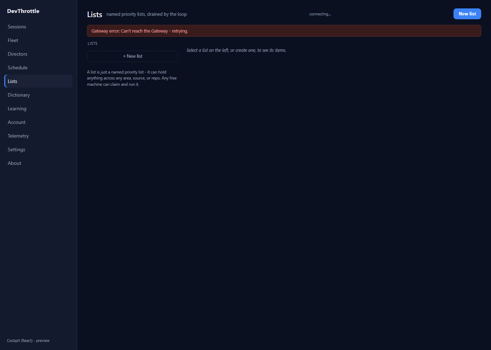
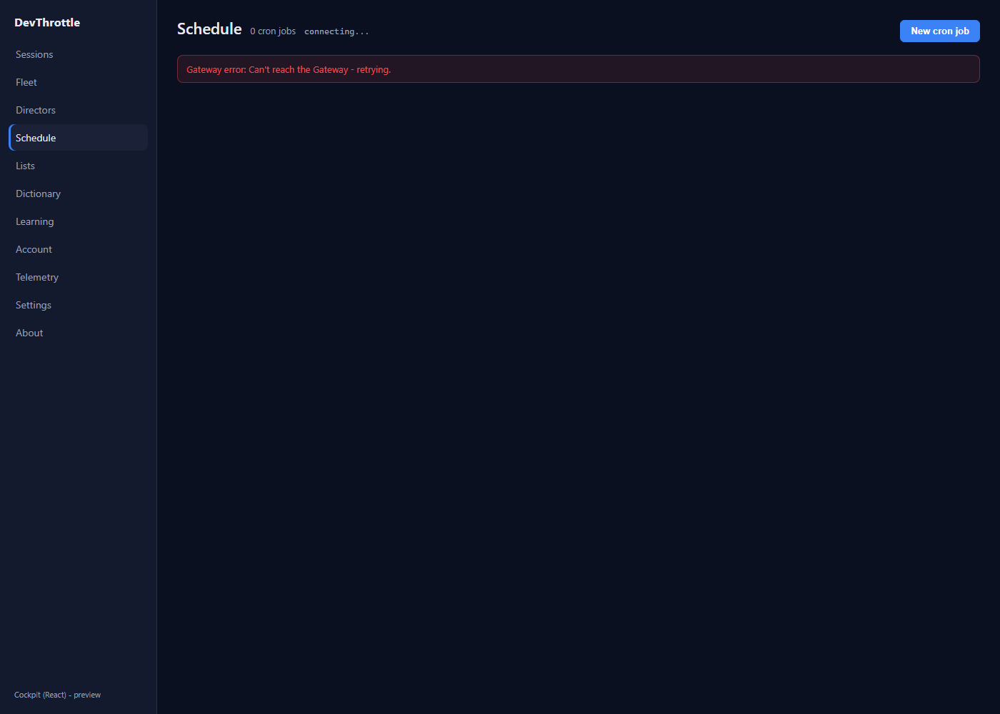
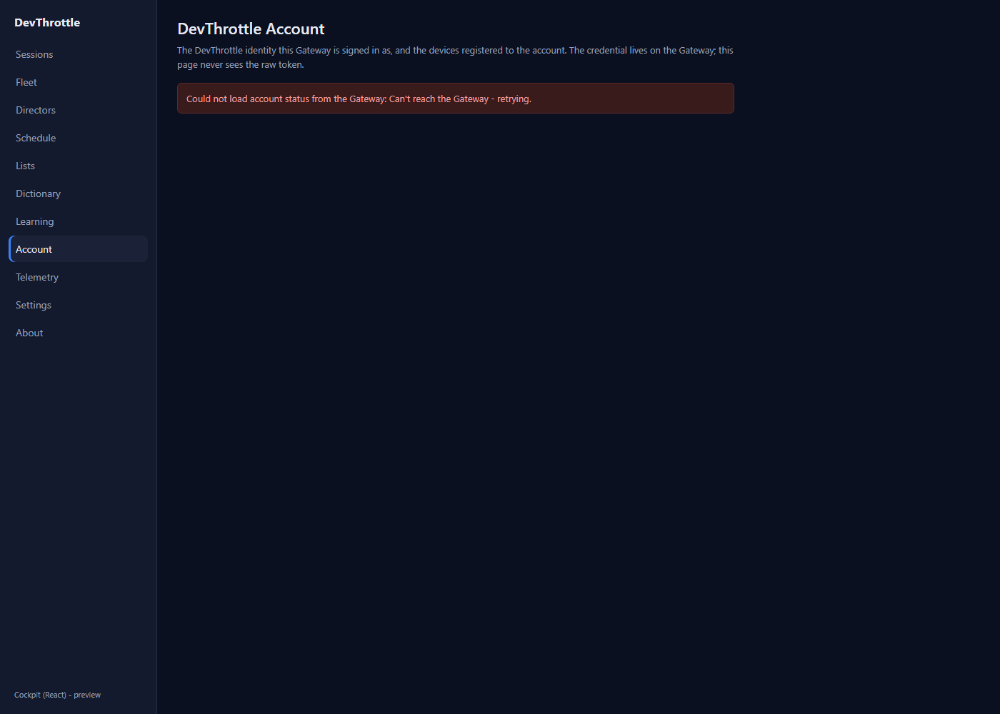
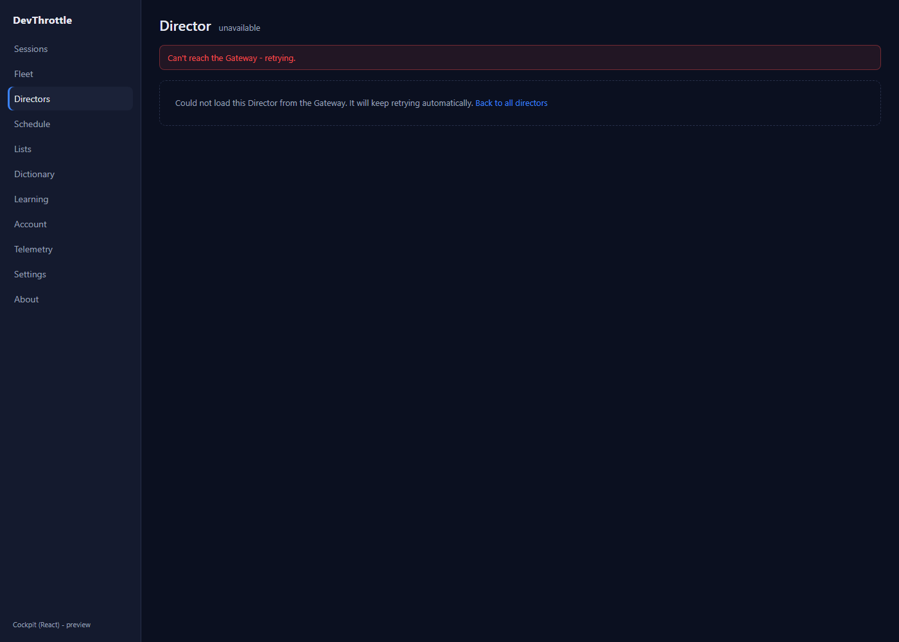
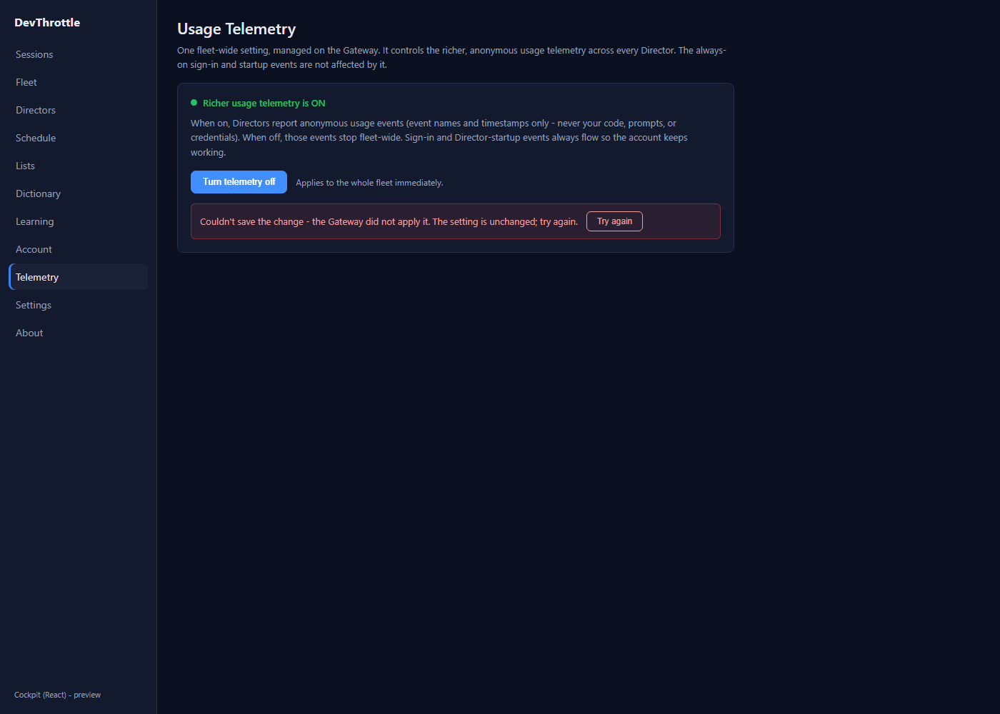
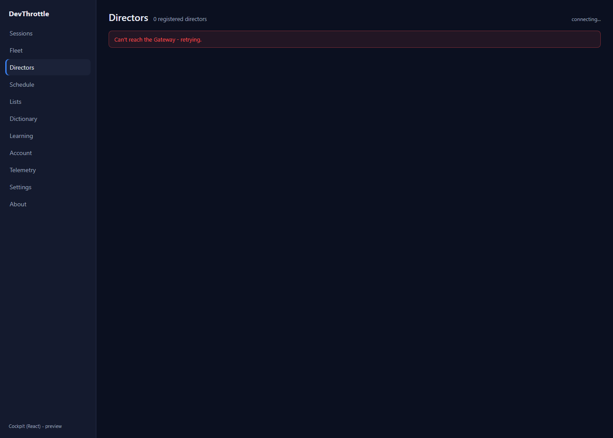
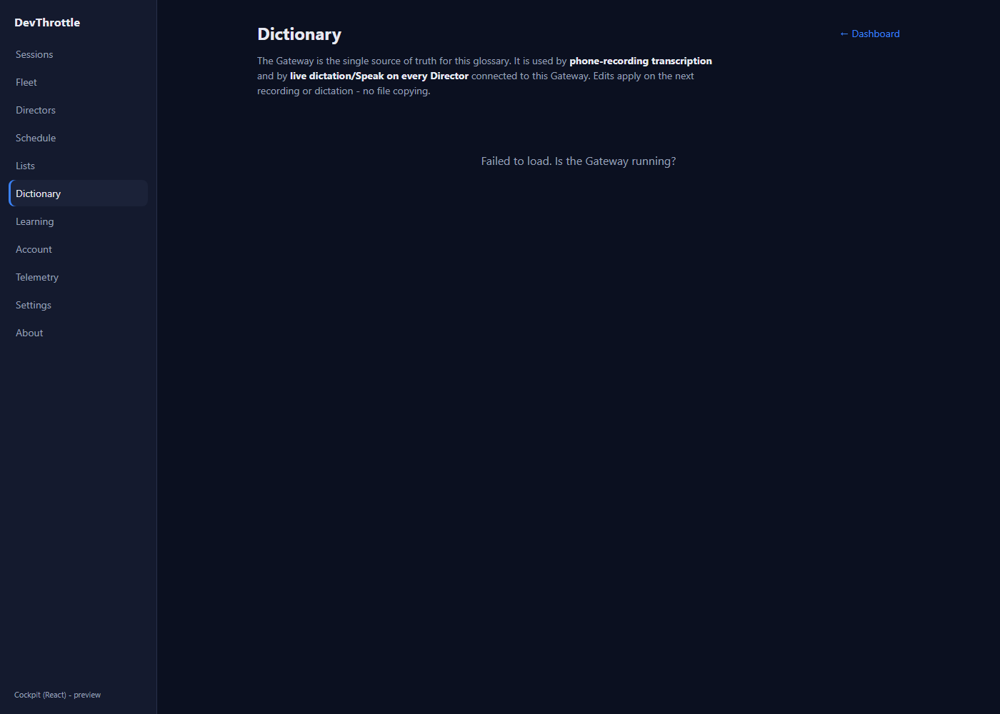
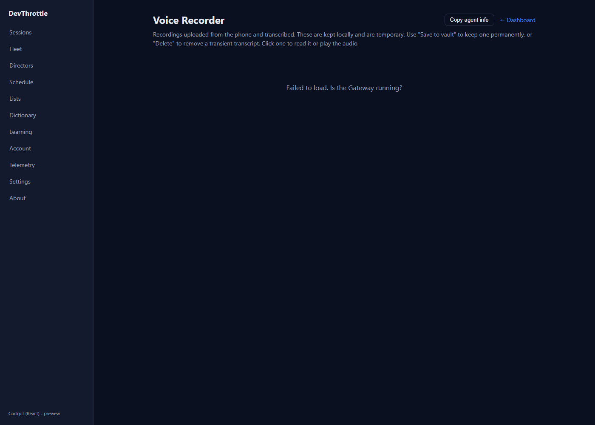
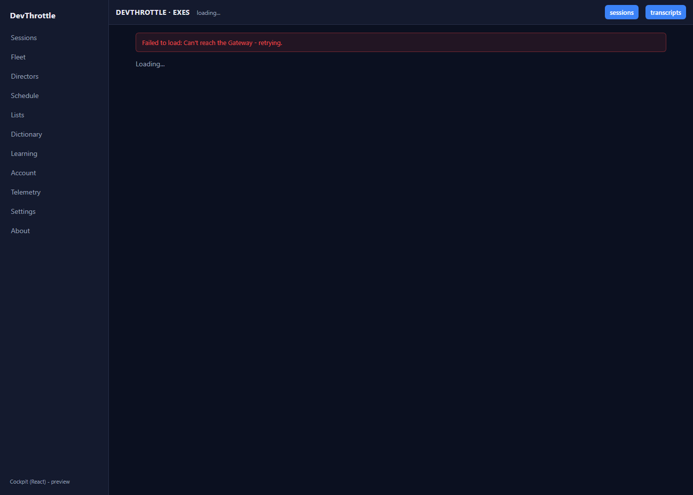
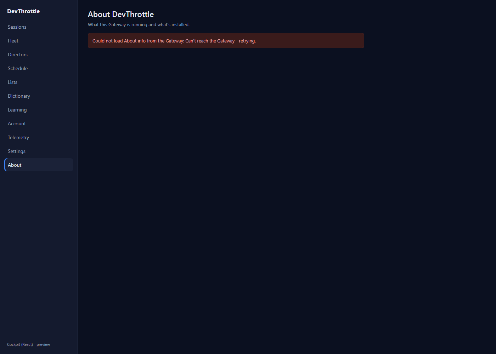
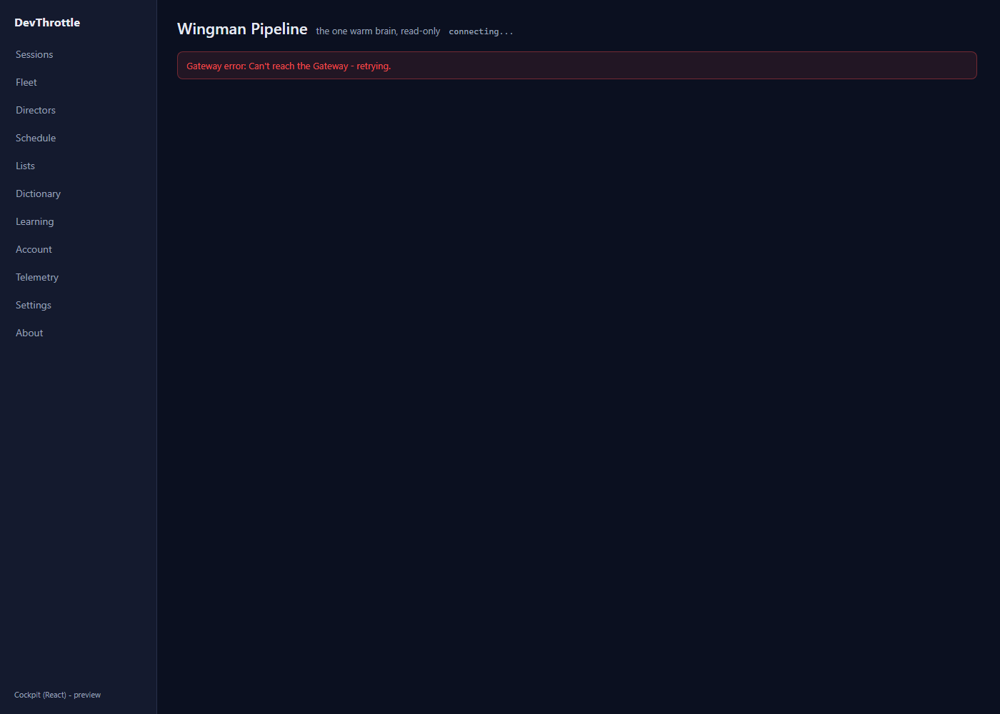
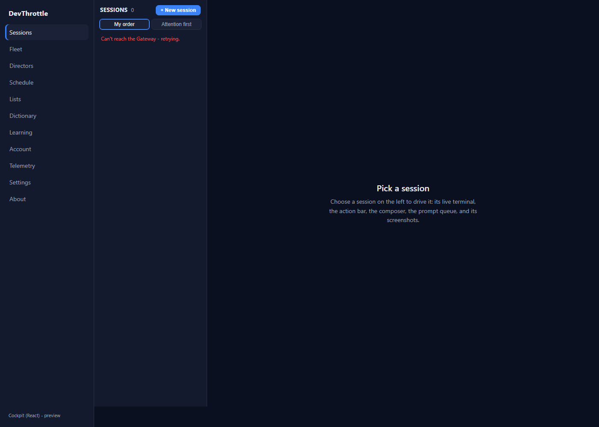
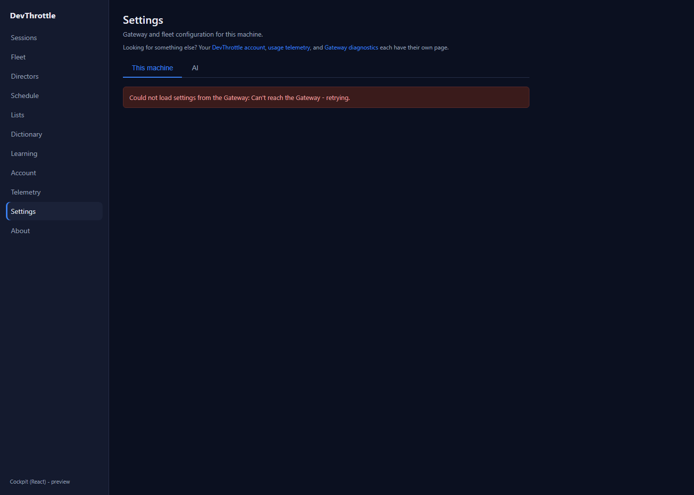